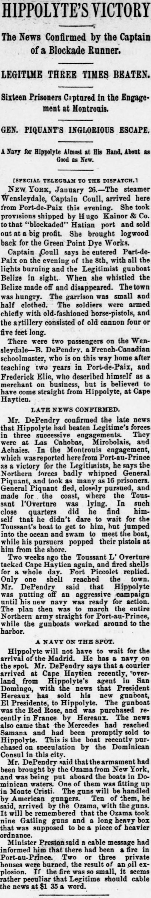

The plan then was to march the entire Northern army straightEl plan entonces era hacer marchar a todo el ejército del Norte directamente
Pittsburg Dispatch. Pittsburg [Pa.], January 27, 1889. Page 7. View the originalVer el original

According to the Pittsburg dispatch on January 27, 1889, Cape Haytien was attacked and shelled for a day while Fort Piccolet replied. Mr. DePendry reported that Hippolyte's forces were preparing an aggressive campaign utilizing a new navy, which reportedly included the purchase of President Hereaux's gunboat El Presidente (formerly the Red Rose) and the Mercedes from Santo Domingo, with armaments brought by the Ozama from New York to be handled by American gunners. Additionally, Minister Preston received a cable message reporting a small fire in Port-au-Prince caused by an oil explosion.Según el Pittsburg dispatch del 27 de enero de 1889, Cap-Haïtien fue atacado y batido a cañonazos durante una jornada entera, contestando el fuerte Picolet. El Sr. DePendry informó de que los destacamentos de Hyppolite preparaban una vigorosa ofensiva amparados en una flamante escuadrilla, la cual comprendía supuestamente la adquisición del cañonero del presidente Heureaux El Presidente (antes Red Rose) y el buque Mercedes comprados a Santo Domingo, junto con artillería traída desde Nueva York por el Ozama servida por artilleros estadounidenses. El ministro Preston recibió por lo demás un despacho notificando un leve incendio en Puerto Príncipe ocasionado por la inflamación de aceite.
FULL TEXT:TEXTO COMPLETO:
HIPPOLYTE'S VICTORY.LA VICTORIA DE HIPPOLYTE.
The News Confirmed by the Captain of a Blockade Runner.La noticia confirmada por el capitán de un corredor del bloqueo.
LEGITIME THREE TIMES BEATEN.LEGITIME TRES VECES DERROTADO.
Sixteen Prisoners Captured in the Engagement at Montrouis.Dieciséis prisioneros capturados en el encuentro en Montrouis.
GEN. PIQUANT'S INGLORIOUS ESCAPE.LA VERGONZOSA ESCAPADA DEL GENERAL PIQUANT.
A Navy for Hippolyte Almost at His Hand, About as Good as New.Una marina para Hippolyte casi en su mano, casi tan buena como nueva.
[SPECIAL TELEGRAM TO THE DISPATCH.][TELEGRAMA ESPECIAL AL DISPATCH.]
NEW YORK, January 26.—The steamer Wensleydale, Captain Coull, arrived here from Port-de-Paix this evening. She took provisions shipped by Hugo Kainor & Co. to that "blockaded" Hatian port and sold out at a big profit. She brought logwood back for the Green Point Dye Works.NUEVA YORK, 26 de enero.—El vapor Wensleydale, capitán Coull, llegó aquí desde Port-de-Paix esta noche. Llevó provisiones embarcadas por Hugo Kainor & Co. a ese puerto haitiano «bloqueado» y las vendió con gran ganancia. Trajo palo de tinte de regreso para la Green Point Dye Works.
Captain Coull says he entered Port-de-Paix on the evening of the 8th, with all the lights burning and the Legitimist gunboat Belize in sight. When she whistled the Belize made off and disappeared. The town was hungry. The garrison was small and half clothed. The soldiers were armed chiefly with old-fashioned horse-pistols, and the artillery consisted of old cannon four or five feet long.El capitán Coull dice que entró en Port-de-Paix en la noche del día 8, con todas las luces encendidas y el cañonero legitimista Belize a la vista. Cuando silbó el Belize se alejó y desapareció. El pueblo estaba hambriento. La guarnición era pequeña y medio vestida. Los soldados estaban armados principalmente con pistolas de caballo anticuadas, y la artillería consistía de viejos cañones de cuatro o cinco pies de largo.
There were two passengers on the Wensleydale—B. DePendry, a French-Canadian schoolmaster, who is on his way home after teaching two years in Port-de-Paix, and Frederick Elie, who described himself as a merchant on business, but is believed to have come straight from Hippolyte, at Cape Haytien.Había dos pasajeros en el Wensleydale—B. DePendry, un maestro de escuela franco-canadiense, que está en camino a casa después de enseñar dos años en Port-de-Paix, y Frederick Elie, que se describió a sí mismo como un comerciante en negocios, pero se cree que vino directamente de Hippolyte, en Cabo Haitiano.
LATE NEWS CONFIRMED.ÚLTIMAS NOTICIAS CONFIRMADAS.
Mr. DePendry confirmed the late news that Hippolyte had beaten Legitime's forces in three successive engagements. They were at Las Cahobas, Mirobalais, and Achaies. In the Montrouis engagement, which was reported here from Port-au-Prince as a victory for the Legitimists, he says the Northern forces badly whipped General Piquant, and took as many as 16 prisoners. General Piquant fled, closely pursued, and made for the coast, where the Toussant l'Ouverture was lying. In such close quarters did he find himself that he didn't dare to wait for the Toussant's boat to get to him, but jumped into the ocean and swam to meet the boat, while his pursuers popped their pistols at him from the shore.El Sr. DePendry confirmó las últimas noticias de que Hippolyte había derrotado a las fuerzas de Legitime en tres encuentros sucesivos. Fueron en Las Cahobas, Mirobalais, y Achaies. En el encuentro de Montrouis, que fue reportado aquí desde Puerto Príncipe como una victoria para los legitimistas, dice que las fuerzas del Norte azotaron severamente al general Piquant, y tomaron hasta 16 prisioneros. El general Piquant huyó, perseguido de cerca, y se dirigió a la costa, donde estaba el Toussant l'Ouverture. En tales aprietos se encontró que no se atrevió a esperar a que el bote del Toussant llegara a él, sino que saltó al océano y nadó al encuentro del bote, mientras sus perseguidores disparaban sus pistolas contra él desde la orilla.
Two weeks ago the Toussant L'Ouverture attacked Cape Haytien again, and fired shells for a whole day. Fort Piccolet replied. Only one shell reached the town. Mr. DePendry said that Hippolyte was putting off an aggressive campaign until his new navy was ready for action. The plan then was to march the entire Northern army straight for Port-au-Prince, while the gunboats worked around to the harbor.Hace dos semanas el Toussant L'Ouverture atacó Cabo Haitiano de nuevo, y disparó proyectiles por un día entero. El Fuerte Piccolet respondió. Solo un proyectil llegó al pueblo. El Sr. DePendry dijo que Hippolyte estaba posponiendo una campaña agresiva hasta que su nueva marina estuviera lista para la acción. El plan entonces era marchar todo el ejército del Norte directamente hacia Puerto Príncipe, mientras los cañoneros trabajaban alrededor hacia el puerto.
A NAVY ON THE SPOT.UNA MARINA EN EL LUGAR.
Hippolyte will not have to wait for the arrival of the Madrid. He has a navy on the spot. Mr. DePendry says that a courier arrived at Cape Haytien recently, overland from Hippolyte's agent in San Domingo, with the news that President Hereaux has sold his new gunboat, El Presidente, to Hippolyte. The gunboat was the Red Rose, and was purchased recently in France by Hereaux. The news also came that the Mercedes had reached Samana and had been promptly sold to Hippolyte. This is the boat recently purchased on speculation by the Dominican Consul in this city.Hippolyte no tendrá que esperar la llegada del Madrid. Tiene una marina en el lugar. El Sr. DePendry dice que un mensajero llegó a Cabo Haitiano recientemente, por tierra desde el agente de Hippolyte en Santo Domingo, con la noticia de que el presidente Hereaux ha vendido su nuevo cañonero, El Presidente, a Hippolyte. El cañonero era el Red Rose, y fue comprado recientemente en Francia por Hereaux. La noticia también vino de que el Mercedes había llegado a Samaná y había sido vendido prontamente a Hippolyte. Este es el bote comprado recientemente en especulación por el Cónsul dominicano en esta ciudad.
Mr. DePendry said that the armament had been brought by the Ozama from New York, and was being put aboard the boats in Dominican waters. One of them was fitting up in Monte Cristi. The guns will be handled by American gunners. Ten of them, he said, arrived by the Ozama, with the guns. It will be remembered that the Ozama took nine Gatling guns and a long heavy box that was supposed to be a piece of heavier ordnance.El Sr. DePendry dijo que el armamento había sido traído por el Ozama desde Nueva York, y estaba siendo puesto a bordo de los botes en aguas dominicanas. Uno de ellos estaba equipándose en Monte Cristi. Los cañones serán manejados por artilleros estadounidenses. Diez de ellos, dijo, llegaron en el Ozama, con los cañones. Se recordará que el Ozama llevó nueve ametralladoras Gatling y una caja larga y pesada que se suponía era una pieza de artillería más pesada.
Minister Preston said a cable message had informed him that there had been a fire in Port-au-Prince. Two or three private houses were burned, the result of an oil explosion. If the fire was so small, it seems rather peculiar that Legitime should cable the news at $1 35 a word.El Ministro Preston dijo que un mensaje por cable le había informado que había habido un incendio en Puerto Príncipe. Dos o tres casas privadas fueron quemadas, el resultado de una explosión de aceite. Si el incendio fue tan pequeño, parece bastante peculiar que Legitime cableara la noticia a $1 35 por palabra.